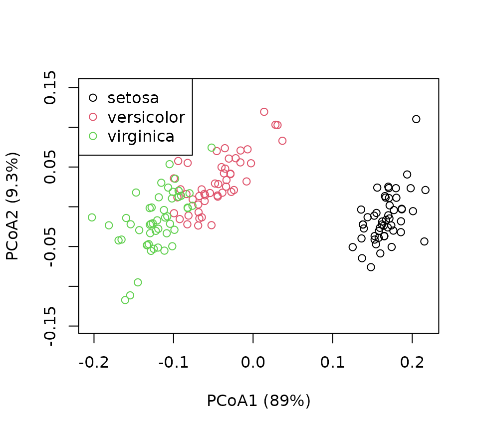
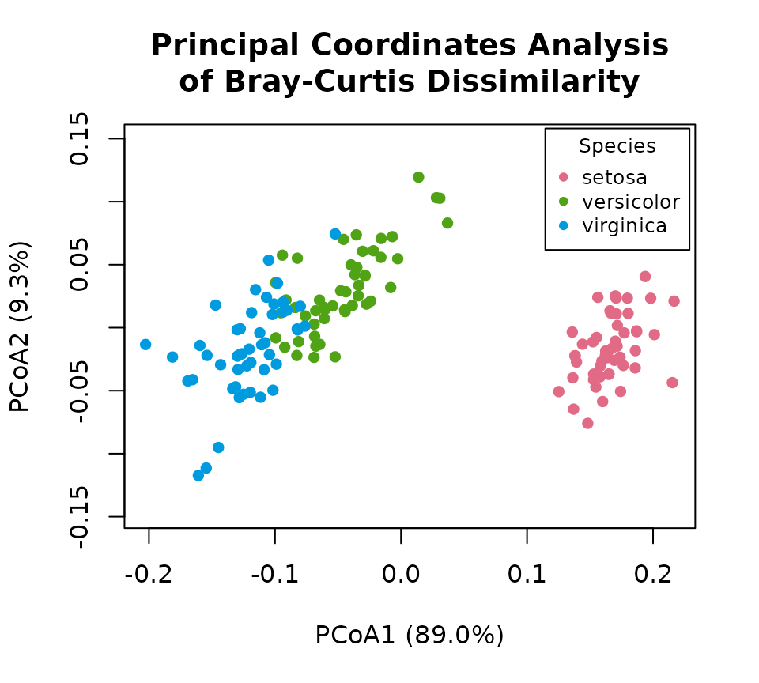

Introduction
An ordination places samples on a few axes so that similar samples land near each other, ready to plot. ecodive has eleven ordination methods, and two functions that show which features or variables drive the axes. All of them are written in parallel C and give the same results as the R and Python packages they replace, for any number of threads.
Most methods ordinate a distance matrix, which you compute first with any beta diversity metric. Three methods, PCA, robust Aitchison PCA and redundancy analysis, start from the count table itself.
bray(), beta_div(), ...
count table ────────────────────────► dm ──► dist_ord(dm, 'pcoa')
│ pcoa(dm), nmds(dm), umap(dm), ...
│ dist_test(dm, 'permanova', ...)
│
└─────────────────────────────────────────► count_ord(counts, 'pca')
pca(counts), rpca(counts)The examples here use R’s built-in iris data: 150
flowers (the samples), four measurements of each (the features), and
three species. Your own data can be any count table that ecodive takes,
such as a matrix, a sparse matrix, or a phyloseq or
rbiom object.
Choosing a method
| Function | Method | Input | Best for |
|---|---|---|---|
pcoa() |
Principal Coordinates Analysis (PCoA) | dm |
The default: exact, fast, and reports the variance on each axis. |
mds() |
Metric Multidimensional Scaling | dm |
Fitting the distances themselves in exactly
n_axes dimensions. |
nmds() |
Non-metric Multidimensional Scaling (NMDS) | dm |
Keeping the rank order of distances; popular with Bray-Curtis. |
isomap() |
Isometric Feature Mapping (Isomap) | dm |
Long gradients that PCoA bends into an arch. |
tsne() |
t-distributed Stochastic Neighbor Embedding | dm |
Separating clusters; distances between clusters mean little. |
umap() |
Uniform Manifold Approximation and Projection | dm |
Clusters, with more of the global layout kept than t-SNE. |
dbrda() |
Distance-based Redundancy Analysis (db-RDA) | dm |
Axes that sample metadata explain (a constrained ordination). |
capscale() |
Constrained Analysis of Principal Coordinates | dm |
The same, as vegan::capscale() computes
it. |
rda() |
Redundancy Analysis (RDA) | counts | Axes of (transformed) counts that sample metadata explain. |
pca() |
Principal Component Analysis (PCA) | counts | Euclidean geometry of (transformed) counts, with feature loadings. |
rpca() |
Robust Aitchison PCA | counts | Sparse compositional data, such as microbiome counts. |
list_dist_ords() lists the methods that take distances,
with the other names each one answers to.
The result
Every method returns the same kind of object: a matrix with one row
per sample and one column per axis, so it goes straight into
plot() or a data frame.
ord <- pcoa(dm)
head(ord)
#> PCoA1 PCoA2 PCoA3
#> [1,] 0.1692812 -0.02591990 -0.005053611
#> [2,] 0.1706354 0.02346821 0.030848760
#> [3,] 0.1870090 -0.00320247 0.032221661
#> [4,] 0.1801593 0.01132449 0.037211653
#> [5,] 0.1763516 -0.02998591 -0.006128668
#> [6,] 0.1363264 -0.03979963 -0.043074846Its attributes say how the ordination was made and how good it is.
They always begin with method, eig (the
eigenvalues), and prop (the proportion of variance on each
axis), followed by the method’s own.
str(ord)
#> 'ecodive_ord' num [1:150, 1:3] 0.169 0.171 0.187 0.18 0.176 ...
#> - attr(*, "dimnames")=List of 2
#> ..$ : NULL
#> ..$ : chr [1:3] "PCoA1" "PCoA2" "PCoA3"
#> - attr(*, "method")= chr "pcoa"
#> - attr(*, "eig")= num [1:3] 2.3473 0.2459 0.0766
#> - attr(*, "prop")= num [1:3] 0.8901 0.0932 0.0291
#> - attr(*, "trace")= num 2.64
#> - attr(*, "correction")= chr "none"
#> - attr(*, "constant")= num 0prop makes informative axis labels. PCoA axes share one
scale, so plot them with asp = 1 to keep distances
true.
pct <- round(100 * attr(ord, 'prop'), 1)
plot(
ord, col = iris$Species, asp = 1,
xlab = paste0('PCoA1 (', pct[1], '%)'),
ylab = paste0('PCoA2 (', pct[2], '%)') )
legend('topleft', levels(iris$Species), col = 1:3, pch = 1)
Running methods by name
dist_ord() runs any distance-based method by name, as
beta_div() does for beta diversity metrics. Each method
keeps its own arguments and defaults, and seed is accepted
(and ignored) by the methods that have no random parts, so one call can
run them all.
ords <- list(
'PCoA' = dist_ord(dm, 'pcoa'),
'MDS' = dist_ord(dm, 'mds', seed = 1),
'NMDS' = dist_ord(dm, 'nmds', seed = 1),
'Isomap' = dist_ord(dm, 'isomap', n_neighbors = 50),
't-SNE' = dist_ord(dm, 'tsne', seed = 1),
'UMAP' = dist_ord(dm, 'umap', seed = 1) )
par(mfrow = c(2, 3), mar = c(2, 2, 2, 1))
for (nm in names(ords))
plot(ords[[nm]], col = iris$Species, main = nm, xlab = '', ylab = '')
Names are matched forgivingly, so 'PCoA',
'cmdscale', 'metaMDS', and
't-SNE' all work. Finished code should use the primary
names shown by list_dist_ords('id').
list_dist_ords()
#> name id
#> 1 Constrained Analysis of Principal Coordinates capscale
#> 2 Distance-based Redundancy Analysis dbrda
#> 3 Isometric Feature Mapping isomap
#> 4 Metric Multidimensional Scaling mds
#> 5 Non-metric Multidimensional Scaling nmds
#> 6 Principal Coordinates Analysis pcoa
#> 7 t-distributed Stochastic Neighbor Embedding tsne
#> 8 Uniform Manifold Approximation and Projection umapNon-Euclidean distances
Many ecological distances, such as Bray-Curtis and unweighted
UniFrac, are not Euclidean: PCoA then finds negative eigenvalues, which
cannot be drawn. correction = 'lingoes' or
'cailliez' adds the smallest constant that removes them, as
ape::pcoa() does.
NMDS sidesteps the question by fitting only the rank order of the
distances. Its stress attribute measures how well it did:
below 0.1 is good, and below 0.05 is excellent.
Constrained ordination
dbrda() and capscale() find the axes of
dm that sample metadata explain. Give one variable as
groups, or several in a formula.
ord <- dbrda(dm, 'Species', iris)
attr(ord, 'r_squared')
#> [1] 0.8787614
attr(ord, 'centroids')
#> dbRDA1 dbRDA2 MDS1
#> Speciessetosa 0.4986852 -0.1249294 0
#> Speciesversicolor -0.1411505 0.4943388 0
#> Speciesvirginica -0.3575347 -0.3694093 0The first two axes (dbRDA1, dbRDA2) are
constrained by species, and the third (MDS1) is the largest
remaining variation. A formula can hold several variables, and
Condition() removes the effect of one before the others are
fitted, as in vegan.
ord <- dbrda(dm, data = iris, formula = ~ Species + Condition(Sepal.Width))
attr(ord, 'inertia')
#> conditional constrained unconstrained
#> 0.6670388 1.8230845 0.1468869rda() does the same for a count table rather than
distances: it is constrained PCA. With norm = 'hellinger'
or norm = 'chord' it is transformation-based RDA (tb-RDA),
the usual choice for community data, and it takes groups,
formula and Condition() as
dbrda() does. Its loadings attribute holds the
features’ (species) scores, for a biplot.
ord <- rda(iris[, 1:4], 'Species', iris, norm = 'hellinger')
attr(ord, 'r_squared')
#> [1] 0.9480809
head(attr(ord, 'loadings'))
#> RDA1 RDA2 PC1
#> Sepal.Length 0.3150483 0.04442764 -0.07668916
#> Sepal.Width 0.6627525 -0.01599961 0.03400069
#> Petal.Length -0.7703689 0.03375146 -0.01565281
#> Petal.Width -0.7519133 -0.03006730 0.19051616db-RDA of Euclidean distances is RDA, so
rda(counts, ..., norm = 'hellinger') has the same axes and
R^2 as dbrda() of the
Hellinger distances, euclidean(counts, norm = 'hellinger').
Its permutation test is permanova() of those distances.
hd <- euclidean(iris[, 1:4], norm = 'hellinger')
c(rda = attr(ord, 'r_squared'), dbrda = attr(dbrda(hd, 'Species', iris), 'r_squared'))
#> rda dbrda
#> 0.9480809 0.9480809
permanova(hd, 'Species', iris, permutations = 99)
#> Permutational multivariate analysis of variance (PERMANOVA)
#>
#> F = 1342, p = 0.01, z = 1215
#> Permutations: 99 (free)
#>
#> Model R2 = 0.9481. Model tested as a whole:
#>
#> Df SumOfSqs R2 F Pr(>F)
#> Model 2 3.054 0.9481 1342 0.01 **
#> Residual 147 0.167 0.0519
#> Total 149 3.221 1.0000
#> ---
#> Signif. codes: 0 '***' 0.001 '**' 0.01 '*' 0.05 '.' 0.1 ' ' 1varpart(), forward_select() and
principal_response_curves(), which are planned, will build
on rda().
Ordinating counts directly
pca(), rpca() and rda() take
the count table rather than distances. count_ord() runs
them by name, as dist_ord() does for the methods that take
distances: count_ord(counts, 'pca') is
pca(counts). PCA works on any of ecodive’s transformations,
such as norm = 'clr' (centered log-ratios, with a
pseudocount for zeros) or norm = 'hellinger'
(square-root proportions, a common choice for community data);
scale = TRUE gives every feature equal weight. The
loadings attribute holds each feature’s direction, for a
biplot.
ord <- pca(iris[, 1:4], scale = TRUE)
attr(ord, 'loadings')
#> PC1 PC2 PC3
#> Sepal.Length 0.5210659 0.37741762 -0.7195664
#> Sepal.Width -0.2693474 0.92329566 0.2443818
#> Petal.Length 0.5804131 0.02449161 0.1421264
#> Petal.Width 0.5648565 0.06694199 0.6342727
load <- attr(ord, 'loadings') * 3
plot(ord, col = iris$Species, asp = 1)
arrows(0, 0, load[, 1], load[, 2], length = 0.1)
text(load[, 1:2], labels = rownames(load), pos = 4)
PCA is PCoA of Euclidean distances: both give the same scores, up to
each axis’s sign. pca() also returns the loadings, and
never forms the 150-by-150 distance matrix.
rpca() is robust Aitchison PCA (as in the
gemelli Python package and QIIME 2’s DEICODE). It treats
zeros as missing rather than adding a pseudocount, which suits sparse
microbiome counts.
What drives the axes?
pcoa_biplot() projects each feature of a table onto a
PCoA, giving an arrow for each one, as scikit-bio does.
ord <- pcoa(dm)
scores <- pcoa_biplot(ord, iris[, 1:4])
scores
#> PCoA1 PCoA2 PCoA3
#> Sepal.Length -5.778706 -7.266865 -1.034818
#> Sepal.Width 1.588488 -9.054336 -2.458405
#> Petal.Length -13.945894 -1.840953 4.618196
#> Petal.Width -5.827864 -1.679216 2.596898
#> attr(,"method")
#> [1] "pcoa_biplot"envfit() fits sample metadata, or a feature table, onto
any ordination. Numeric variables get an arrow and r-squared, factors a
centroid per level, and each one a permutation p-value, as
vegan::envfit() gives.
fit <- envfit(ord, iris)
fit
#> variable level PCoA1 PCoA2 PCoA3
#> Sepal.Length Sepal.Length <NA> -0.61857745 -0.77787638 -0.110771313
#> Sepal.Width Sepal.Width <NA> 0.16693381 -0.95151811 -0.258353229
#> Petal.Length Petal.Length <NA> -0.94193586 -0.12434192 0.311922927
#> Petal.Width Petal.Width <NA> -0.88333780 -0.25452127 0.393615619
#> Speciessetosa Species setosa 0.16700378 -0.01395054 0.001691427
#> Speciesversicolor Species versicolor -0.04635194 0.03090254 -0.009450001
#> Speciesvirginica Species virginica -0.12065184 -0.01695200 0.007758574
#> r2 p_value z
#> Sepal.Length 0.8951005 0.001 57.50362
#> Sepal.Width 0.9377558 0.001 57.03726
#> Petal.Length 0.9884977 0.001 59.52106
#> Petal.Width 0.9348862 0.001 55.99111
#> Speciessetosa 0.8649502 0.001 70.45196
#> Speciesversicolor 0.8649502 0.001 70.45196
#> Speciesvirginica 0.8649502 0.001 70.45196
# An arrow for each measurement, longer for a better fit.
vec <- fit[is.na(fit$level), ]
xy <- vec[, c('PCoA1', 'PCoA2')] * sqrt(vec$r2) * 0.1
plot(ord, col = iris$Species, asp = 1)
arrows(0, 0, xy$PCoA1, xy$PCoA2, length = 0.1)
text(xy, labels = vec$variable, pos = 1, cex = 0.8)
Speed and reproducibility
Every method runs on all available cores by default; set
cpus to use fewer. Results are identical for any number of
threads. Methods with random starts (mds(),
nmds(), tsne(), and umap()) take
a seed, so a seed always gives the same result.
Next steps
An ordination shows whether groups of samples look different. To test
it, see vignette('stat_tests').